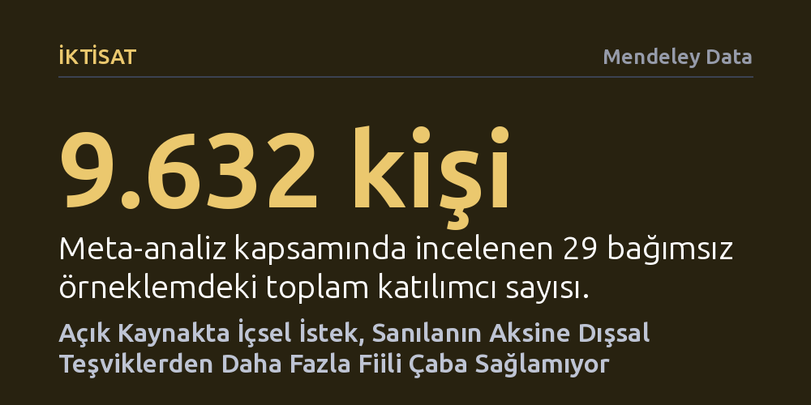

IKTISAT · Mendeley Data · 2026-10-23
Açık kaynak projelerine katkıyı sürdürme niyeti ile harcanan fiili çabanın motivasyonel öncülleri 9.632 kişilik veriyle incelendi. Yaygın inancın aksine, içsel motivasyonun fiili çabayı dışsal teşviklerden daha fazla artırmadığı ve parasal ödüllerin keyfi kaçırmadığı saptandı.
Gönüllü işlerin yalnızca içsel tutkuyla yürüdüğü algısını yıkarak, maddi teşviklerin ve itibar mekanizmalarının niyeti fiili işe dönüştürmede sanılandan çok daha etkili olduğunu gösteriyor.

Linux işletim sisteminden günlük hayatta kullandığımız yazılımların belkemiğini oluşturan kütüphanelere kadar dijital dünyanın temelleri, milyonlarca insanın karşılıksız gibi görünen iş birliğiyle ayakta duruyor. Yirmi yılı aşkın süredir araştırmacılar şu basit sorunun peşinden gidiyor: İnsanlar mesai saatleri dışında neden başka insanların ücretsiz kullanacağı yazılımlar üretmek için emek harcar? Ancak bugüne kadar yapılan araştırmalar birbiriyle çelişen sonuçlar ortaya koydu.
Literatürdeki en büyük sorunlardan biri, insanların bir projeye katkı vermeyi sürdürme niyeti ile klavye başında döktükleri fiili emek ve çabanın birbiriyle eşdeğer kabul edilmesiydi. Oysa bir işe niyetlenmek ile o iş için fiilen zaman harcamak tamamen farklı süreçlerdir. Katkıcıların zihnindeki devam etme arzusu ile harcadıkları somut efor arasındaki dinamikleri ayrıştırmadan, açık iş birliği projelerinin geleceğini sağlıklı planlamak mümkün değildir.
Açık kaynak dünyasındaki kafa karışıklığını gidermek isteyen araştırmacılar, tekil bir anket yapmak yerine bu alanda son yirmi yılda yayımlanmış 41 bağımsız çalışmayı kapsayan bir meta-analiz yürüttü. Psikoloji ve davranışsal iktisadın temel taşlarından olan öz-belirleme kuramı ile motivasyon dışlama yaklaşımını temel alan çalışma, 29 farklı örneklemden gelen toplam 9.632 katılımcının verilerini bir araya getirdi.
Araştırma kapsamında; içsel heves, dışsal beklentiler, itibar ve parasal teşvikler gibi sekiz temel motivasyon faktörünün hem devam etme niyeti hem de harcanan fiili çabayla ilişkisini gösteren 178 korelasyon tek bir havuzda toplandı. Böylece bireysel anketlerin ötesine geçilerek açık kaynak ekosisteminin genelindeki istatistiksel eğilimler tarafsız bir yöntemle süzüldü.
Analiz sonuçları, açık kaynak dünyasında uzun yıllardır sorgulanmadan kabul edilen yaygın bir varsayımı çürüttü: Katkıcının içsel motivasyonu, yani işi saf merak veya zevk için yapması, fiili çaba üzerinde dışsal motivasyondan (örneğin kariyer veya maddi kazanç beklentisi) daha güçlü bir etki yaratmıyor. İncelenen sekiz faktörün tamamı devam etme niyetiyle pozitif ilişkiliyken, bunların yedi tanesi fiili çabayla pozitif ilişki gösterdi. Üstelik niyet ile eylem arasındaki en belirgin uçurum tam da içsel motivasyonda ortaya çıktı; insanlar projeyi sevdikleri için devam etmeyi güçlü şekilde isteseler de bu niyet her zaman fiili çalışmaya dönüşmüyor.
Diğer taraftan, ekonomi literatüründe uzun süredir tartışılan 'maddi ödüller içsel keyfi baltalar mı' sorusuna da net bir yanıt bulundu. Araştırmacılar, parasal ödüllerin kişilerin kod yazmaktan aldığı keyfi dışladığına dair hiçbir işaret saptamadı. Ayrıca itibar kazanma arzusunun fiili çabaya dönüşmesi, büyük oranda platformun görünür bir itibar ve puanlama sistemine sahip olmasına bağlı olarak gerçekleşiyor.
Elde edilen bulgular, açık kaynak dünyasında sadece gönüllülerin hevesine ve iyi niyetine güvenmenin işlerin aksamasına yol açabileceğini gösteriyor. Katkıcıların projeye duyduğu sevgi ve devam etme isteği kuşkusuz değerlidir; ancak bu niyetin somut bir çıktıya dönüşebilmesi için dışsal motivasyon unsurlarının, itibar göstergelerinin ve gerektiğinde maddi teşviklerin devreye girmesi kritik rol oynuyor.
Platform yöneticileri ve açık kaynak toplulukları açısından bu sonuçlar pratik bir dönüşüm ihtiyacına işaret ediyor. Gönüllülerin hevesini kırma korkusuyla parasal ödüllerden kaçınmanın yersiz olduğu, bunun yerine katkıcıların niyetlerini klavye başında harcanan gerçek bir emeğe dönüştürecek şeffaf ödül ve tanınma mekanizmalarının kurulması gerektiği anlaşılıyor.